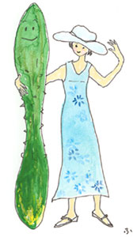
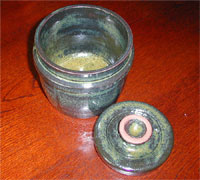

|
■噛み方作法
母がつくってくれた弁当の包みを解きながら、きょうこそは気をつけようと思うのだった。その決心がどうしてつづかないのか、私はいつも迂闊にも、自分の胸を叩くことになる。喉をつまらせてしまうのだ。
そうなると、お茶を飲むこともかなわない。苦しいけれど、食べたものが食道を過ぎていくのを待つしかほかに方法がないのだ。この奇癖ともいえる「喉つまり」は小学校を卒業したあとも、ときどき私を悩ませた。家でごはんを食べるときにも、給食の時間にも出ることのない癖だった。なぜか、母がつくる弁当をひらく、給食が休みの日や遠足、社会科見学などというときに限って、失敗する。母の弁当は滅法おいしかった。うれしくてうれしくて、おいしくておいしくて、無我夢中で食べているうちに、喉と胸の間あたりでつまってしまう。
社会人になって、母の弁当を食べる機会のめっきりなくなったころ、ふと思い出して打ち明けた。
「私、お弁当を食べるたびに、喉つまりしていたのよ」
母は、えっと目を見張り、そのあとしみじみとこう言ったのだ。
「おじいちゃまに似たんだわ。威厳もあって落ち着いたひとだったのに、おじいちゃまには、喉つまりの癖があったの。何か食べていると、突然、目を白黒させて苦しそうにして、『ヤスコさん、ヤスコさん。み、水』って私を呼ぶのよ」
長男の嫁である母は、舅を尊敬し、親しみももっていたので、折にふれて「おじいちゃまがね、」と言って懐かしい話を聞かせてくれたが、喉つまりの話は初めてだった。
一族郎党のなかで誰もが認める人格者だったという祖父の、奇癖だけを私は譲り受けてしまったらしい。
私は遺伝というものを、あまり信じていない。信じないようにしていると言ってもいいかもしれない。遺伝にこだわり過ぎ、囚われると、ただでさえむつかしい要素をふくむ血縁が、ますますこんがらかるような気がしている。育ててもらった恩と、ともに暮らした歳月の重みと懐かしみを忘れさえしなければ、血のつながり具合はどうでもいいような気さえする。しかし、奇癖が似ているというそれくらいなら、この世に重なって生きた時間が四年しかなかった祖父を思い出す手がかりにはなるのかもしれなかった。
噛まないのがよくなかったのだ、といまならよくわかる。私も、そしていまは亡き祖父も、噛み方が不足していた。弁当を食べるとき、ふだんとは異なる楽しみに目がくらんで喉がつまるというのは、たしかに奇癖の部類だろう。が、その奇癖の根もとに噛まないでものを食べようとする習慣が横たわっていたのではなかったか。食べるのが早いこと、並みはずれた量を食べるのも、この悪習が原因だった。食べる量を減らし、噛む回数をふやす努力をはじめたのは、自分が母という立場になってからだった。この悪習を子どもに伝えてはならないと、思ったのがきっかけだ。子どもがまだ小さいころ、「よく噛む」習慣へと誘うために、きゅうりには世話になった。きゅうりを口に運んだ子どもの目の前で、耳に手をかざし、噛む音を聞くかたちをつくる。
「いい音」
と、ポリポリ噛む音を褒めちぎったのだ。無邪気な子どもは、
「また噛むから、聞いて、聞いて、」
と、ポリポリをくり返した。
「お母さんには、ご飯を噛む音も、じゃこを噛む音も、お芋を噛む音も聞こえるんだ」
子育てを助けてもらったから言うのではないが、きゅうりが好き。露地ものがでる季節がめぐるのが待ち遠しくてならない。きゅうりが好きだといったってね、とときどき友だちに言われるのだ。
「きゅうりって、漬物かサラダ、酢の物。あとはもろきゅうみたいな食べ方しかないんじゃないの？」
こんなとき、きゅうりの肩をもつために「茄子のみどり和え」という切り札を出す。
茄子3個、きゅうり2本を用意する。きゅうりはすりおろし、水気をしぼっておく。ここに酢大さじ1、しょうゆ大さじ1、砂糖小さじ1を合わせたものを加える。一方、茄子は皮をむき、6等分ほどの大きさに切って油で揚げるのだ。この茄子をきゅうりで和えて、でき上がり。
「熱くても、冷たくしてもおいしいのです」
と、これまたきゅうり好きの友人が教えてくれた、一風変わったきゅうり料理。
しかし、これからの季節、なんといってもきゅうりの塩もみがいちばん。これは箸休めにはもちろんのこと、どんな酒のさかなにもなる上に、噛む音あざやかなれば「噛み方作法」に一役買う。。

■きゅうりの塩もみ
きゅうり………………………………………2本
塩（きゅうりの重さの３％見当）……小さじ1
・きゅうりは、ごく薄い小口切り（輪切り）にし、ボールに入れて塩をふる。
・さっと混ぜて、10分〜15分おく。
・しんなりしたきゅうりをていねいにもみ、水をたっぷり注ぐ。これをざるに流し入れて 布巾で包んで水気をとる。
※万事ていねいにやさしく。でないとズタボロな塩もみになります。
※きゅうりの塩もみのほかに、わかめや魚介類などをもりつけて三杯酢をかけてもおいし いのですが、ただきゅうりの塩もみだけというのも、いけます。この場合は少し塩をき つめにし、冷蔵庫で冷やしておきます。きゅうりの塩もみというのは、奥の深い夏の料理です。

|